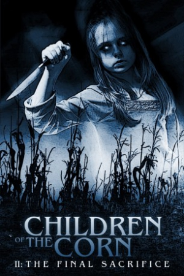

Country:United States, 92 minutes
Spoken languages:English
Genres:Horror
Director(s):David Price
Writer(s):Gilbert Adler, A L Katz
Video Codec:Unknown
Number: 2710


Certification:R
Storyline:
When a tabloid reporter and his son travel to a quiet Midwestern town to investigate a gruesome massacre, they fall victim to a possessed orphan named Micah.
Cast:

Medium: Original DVD,
Comments: Part of: Children of the Corn - 6-movie Collection
Loaned: No
Aspect ratio: Unknown